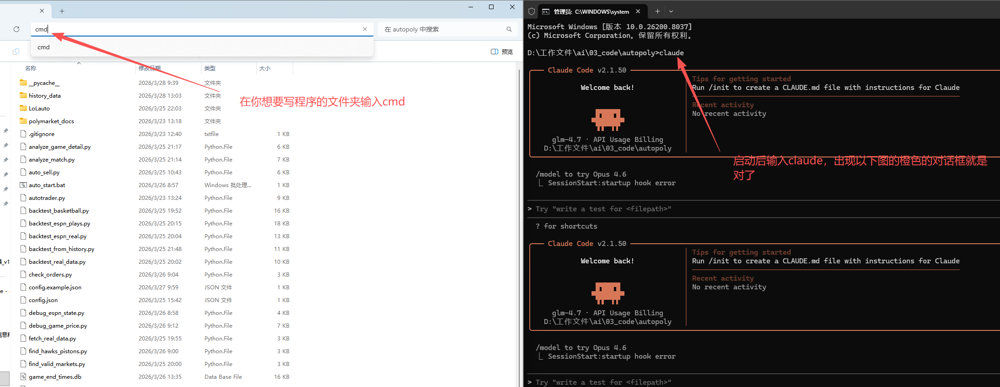

🚀 下载并运行检测工具
点击下方按钮下载 检测环境.bat
📋 使用步骤：
- 点击上方按钮下载 bat 文件
- 下载完成后，找到下载的文件
- 双击运行检测环境.bat
- 查看检测结果
检测结果显示什么？
根据检测结果选择：
- Node.js = Claude Code 的"引擎"，没有它无法运行
- Git for Windows = 提供命令行环境，让 Claude Code 正常工作
Claude Code 不需要 Python 环境
如果你看到有教程说要安装 Python，那是针对其他工具的，Claude Code 只需要 Node.js 即可
按 Win + X，然后选择 「终端 (管理员)」 或 「Windows PowerShell (管理员)」
💡 窗口标题有「管理员」字样说明权限正确
在窗口中输入以下命令并回车：
💡 使用淘宝镜像源，国内下载更快
安装完成后，关闭当前命令行窗口，打开新的，输入 claude --version 验证
现在可以开始使用 Claude Code 了！
如果提示找不到命令，按以下步骤操作：
- 关闭所有命令行窗口
- 打开新的命令行窗口，再试一次
- 如果还不行，重启电脑（PATH需要刷新）
📍 Claude Code 安装路径通常在：C:\Users\[你的用户名]\AppData\Roaming\npm\
📂 如何使用 Claude Code？
Claude Code 需要在某个文件夹里面启动，它才能帮你处理这个文件夹里的文件
- 找一个你想用来写代码的文件夹（可以在桌面新建一个）
- 进入这个文件夹（双击打开它）
- 在文件夹窗口顶部的地址栏输入：
cmd - 按 回车键，会出现黑色的命令行窗口
- 在这个窗口中输入：
claude，然后按回车 - 看到 Claude Code 界面就启动成功了！
以后想在这个文件夹用 Claude Code，只需要：进入文件夹 → 在地址栏输入 cmd → 输入 claude
如果提示「需要 git-bash」，需要设置环境变量：
步骤0：先找到 Git 安装位置
在命令行中运行：
会显示类似：C:\Program Files\Git\cmd\git.exe
把 cmd\git.exe 改成 bin\bash.exe 就是你要的路径
方法1：PowerShell 命令（推荐）
然后重启命令行窗口
方法2：图形界面设置
- 按
Win + R，输入sysdm.cpl，回车 - 点击「高级」→「环境变量」
- 在「用户变量」中点击「新建」：
- 变量名：
CLAUDE_CODE_GIT_BASH_PATH - 变量值：
C:\Program Files\Git\bin\bash.exe
- 变量名：
- 点击「确定」保存，重启命令行窗口
💡 如果 Git 安装在其他位置，请修改路径
访问：https://www.bigmodel.cn/glm-coding?ic=XXSB3R8LTZ
使用手机号注册
邀请码：XXSB3R8LTZ
（注册时会自动填充，或手动输入）
推荐购买包年最便宜的套餐
早上 10:00 有限时优惠，记得守点抢购！
- 新用户有免费额度可以试用
- 支持支付宝/微信支付
- 购买后立即生效
- 后续可随时升级更高套餐
在账户设置中复制你的 API Key
📝 什么是终端？（纯小白必看）
终端就是黑色的命令行窗口，用来输入命令让电脑执行操作
就像和电脑"说话"，告诉电脑要做什么
🔧 如何打开终端？（一步一步）
- 找到键盘左下角的 Win键（带微软图标的键）
- 同时按住 Win键 + R键
- 在弹出的小窗口中输入
cmd - 按 回车键（Enter）
- 会出现一个黑色的命令行窗口 - 这就是终端！
打开终端后，复制下面的命令，粘贴到终端里，按回车：
💡 此命令不需要管理员权限，普通 PowerShell 或 CMD 即可运行
步骤 1：确认安装
运行后会出现提示：
@anthropic-ai/claude-code@xxx.x.x
Ok to proceed? (y)
输入 y 并按回车
步骤 2：选择语言
会提示选择语言，输入 zh 或选择 「中文」
步骤 3：选择 API 提供商
选择 「GLM Coding Plan 中国版」
步骤 4：粘贴 API Key
按提示粘贴你的智谱 API Key，按回车确认
💡 一键配置，无需手动修改文件
运行 npx 命令时，跟着提示操作即可自动完成 GLM 配置
📝 如果上面已经配置过 API
直接跳到下一步：配置 MCP 服务器
如果还没配置，在终端运行：
跟着提示操作即可，会自动配置好 GLM 模型
🔌 什么是 MCP？
MCP（Model Context Protocol）是 Claude Code 的扩展功能，可以添加各种实用工具（如搜索、看图、读网页等）
💡 配置建议：全部开启
MCP 服务器只在需要时才启动，用完会自动停止，不会占用系统资源
在配置过程中，遇到 MCP 服务器选项时：全部选择 Yes/启用
- ✅ 搜索 MCP - 网络搜索功能
- ✅ 视觉 MCP - 识别图片功能
- ✅ 网页读取 MCP - 抓取网页内容
- ✅ 其他可用的 MCP 工具
配置完成后，在 Claude Code 中输入 /mcp 查看已启用的 MCP 服务器
💡 Claude Code 是什么？
Claude Code 是一个AI 编程助手，你可以用自然语言和它对话，让它帮你：
- 📝 写代码、改代码、解释代码
- 🐛 找 Bug、修复问题
- 📚 写文档、写注释
- 🔍 分析代码结构
- 🎯 回答编程问题
- 找一个你想用来写代码的文件夹
- 进入这个文件夹（双击打开它）
- 在文件夹窗口顶部的地址栏输入：
cmd - 按 回车键，会出现黑色的命令行窗口
- 在这个窗口中输入：
claude，然后按回车

如图所示：在文件夹地址栏输入 cmd 后按回车，即可在当前目录打开命令行窗口
🔒 安全说明
Claude Code 只能操作你启动它的文件夹
在不同文件夹启动 Claude Code，它只能访问和修改那个文件夹里的内容。你的其他文件是安全的。
- 等待 Claude Code 启动，看到欢迎界面
- 直接开始对话，例如：
帮我写一个计算器 - Claude Code 会自动分析当前文件夹的代码
- 你可以继续问问题，让它帮你完成各种任务
/status - 查看状态和配置
/mcp - 查看已启用的 MCP 服务器
- ✅ 具体描述需求 - "帮我写一个登录页面" → "帮我写一个包含用户名、密码输入和登录按钮的登录页面"
- ✅ 指定语言/框架 - "写一个计算器" → "用 HTML+JavaScript 写一个简单的计算器"
- ✅ 说明上下文 - "在这个文件里添加错误处理"
- ✅ 分步骤 - 复杂任务可以拆分成多个小问题
| 场景 | 示例提问 |
|---|---|
| 生成新代码 | "帮我写一个贪吃蛇游戏" |
| 解释代码 | "解释这段代码是做什么的" |
| 找 Bug | "这个函数有个错误，帮我找出来" |
| 优化代码 | "优化这段代码的性能" |
| 添加功能 | "给这个页面添加搜索功能" |
| 重写代码 | "把这个函数改成异步的" |
在 Claude Code 界面中按 Ctrl+C 或直接关闭命令行窗口即可退出
装了 Claude Code 但没做这一步，你还是在用「失忆的临时工」。
做完这一步，它才能记住你是谁、你在做什么、你喜欢什么风格——永远不用再自我介绍第二遍。
在 Claude Code 界面里，复制粘贴下面这段话（把括号里的内容替换成你自己的）：
它会在你的工作文件夹里生成一个 CLAUDE.md 文件。这就是它的「记忆档案」。
每次启动 Claude Code 后，它会自动读取 CLAUDE.md，了解你是谁、在做什么、偏好什么风格，然后再开始工作。
你再也不用每次重新介绍自己了！
两个关键点：
- CLAUDE.md 必须放在工作文件夹的根目录
- 启动 Claude Code 时必须在这个文件夹中
❌ 错误示例
在 D:\ 工作，但 CLAUDE.md 在 D:\工作\项目\ 里 → 读取不到
✅ 正确示例
进入 D:\工作\项目\ 文件夹，然后启动 Claude Code → 自动读取
创建完 CLAUDE.md 后，直接问它：
如果它能正确回答你的名字和工作，说明生效了 ✅
有时 Claude Code 可能没有自动读取，手动告诉它：
💡 积累型 vs 消耗型
大多数人用 AI 是「消耗型」：每次打开，得到输出，关掉，清空，三个月后什么都没积累。
真正有价值的用法是「积累型」：每次工作，结果存下来，经验沉淀进系统，下次更快，质量更好。
不需要自己一个一个建文件夹。复制下面这段话，直接让 Claude Code 帮你创建：
以下是真实场景，每一条指令都可以直接复制粘贴给 Claude Code 使用：
| 场景 | 示例指令 |
|---|---|
| 📝 自媒体/内容创作 | "我有3个月的推文草稿，帮我按话题整理，找出哪些角度我还没写过，生成一份选题建议报告" |
| 📊 销售/客户管理 | "把这6个月的客户聊天记录扫一遍，总结每个客户的核心需求和痛点，帮我生成一份客户画像报告" |
| 📋 项目管理 | "把这份会议录音文字稿整理成行动项，按负责人分类，标注截止日期，生成一份跟进清单" |
| 🗂️ 知识/文件管理 | "桌面上有300个文件，帮我按工作、学习、生活分类，重命名混乱的文件名，把一年以上没打开的文件列出来让我决定是否删除" |
| 📈 数据分析 | "帮我分析这个 Excel 表格，找出过去6个月哪类内容互动最高，总结规律，把结论写进一个分析报告文件" |
| 🎯 个人品牌/PPT | "帮我做一份关于[你的方向]的路演材料，要有清晰的框架，包含问题、解决方案、差异化、行动计划四个部分" |
给 Claude Code 下指令，越具体越好。告诉它：
- 操作什么文件
- 要做什么
- 输出什么格式
- 存在哪里
越明确，结果越准。
✅ 装好 CC，建好 CLAUDE.md，先用一周
一周之后，你会真正明白什么叫「让 AI 住进你的电脑」。
用网页 AI 三个月，什么都没积累。
用 CC 三个月，你有了一个越来越懂你的系统。
安装过程中遇到报错不要慌，以下是最常见的三大坑和对应解法：
这是最常见的问题。原因是终端（黑框框）没有走代理，即使你的浏览器能开 Claude，终端依然走的是直连。
Windows 用户：
- 确保代理软件开启全局模式
- 使用美国节点（或其他非被封锁的节点）
- 检查代理端口是否正确（常见端口：7890、10809 等）
✓ 解法： 确认代理设置正确后，重新运行安装命令
安装完毕后输入 claude 提示找不到命令，通常是 PATH 没有生效。
✓ 解法： 关掉终端窗口，重新打开一个新的终端，再输入 claude 试试
点了 Authorize 之后没有反应，或者跳回报错页面。通常是：
- 登录的 Claude 账号不是 Pro 会员
- 网络在授权跳转时断了
- 代理没开全局模式
✓ 解法： 确认 claude.ai 账号是 Pro，代理开全局模式，关掉浏览器重试
遇到任何报错，先把红色报错文字复制，直接粘贴给 Claude 网页版说：
它会告诉你解决方法。
A: 在 PowerShell 中运行以下命令允许脚本执行：
A: 设置环境变量 CLAUDE_CODE_GIT_BASH_PATH：
然后重启命令行窗口
A: 尝试以下步骤：
- 关闭所有 Claude Code 窗口
- 打开新的命令行窗口
- 检查 JSON 格式是否正确（可用在线工具校验）
- 必要时删除配置文件重新配置
A: 建议使用 2.1.42 或更新版本，验证 OK
A: 可以选择：
- Kimi（月之暗面）
- DeepSeek（深度求索）
- 通义千问（阿里）
A: 主要功能：
- 代码生成和原型开发
- 问题诊断和 Debug
- 代码优化和重构
- 文档编写
- 项目结构分析
- 描述越具体，结果越好
- Claude Code 能理解项目结构
- 可以多轮对话逐步细化需求
- 遇到问题多追问，不要一次期望完美